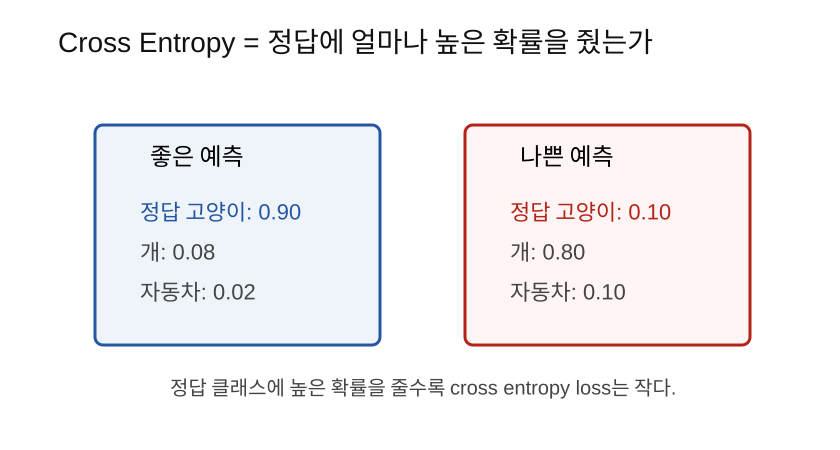

Entropy는 불확실성의 크기이고, cross entropy는 모델이 정답에 얼마나 높은 확률을 줬는지 평가하는 손실함수다.
분류 모델은 softmax를 통해 확률분포를 만든다.
고양이: 0.66
개: 0.24
자동차: 0.10그다음 필요한 질문은 이것이다.
이 확률분포가 정답과 얼마나 잘 맞는가?이 질문에 답하는 대표 손실함수가 cross entropy다.
정보량은 놀라움의 크기라고 생각할 수 있다.
매일 해가 뜨는 것은 별로 놀랍지 않다. 정보량이 작다.
해가 떴다.반대로 매우 드문 일이 일어나면 놀랍다. 정보량이 크다.
한여름에 눈이 왔다.확률이 낮은 사건일수록 일어났을 때 정보량이 크다.
Entropy는 확률분포 전체의 불확실성이다.
동전이 공정하면 앞면과 뒷면이 반반이다.
[0.5, 0.5]결과를 예측하기 어렵다. entropy가 높다.
반대로 동전이 거의 항상 앞면이면,
[0.99, 0.01]결과를 예측하기 쉽다. entropy가 낮다.
Cross entropy는 정답 분포와 모델 예측 분포가 얼마나 다른지 측정한다.
분류 문제에서는 보통 정답이 one-hot이다.
정답: 고양이
정답 분포: [1, 0, 0]모델 예측이 다음과 같으면 좋은 예측이다.
[0.90, 0.08, 0.02]모델 예측이 다음과 같으면 나쁜 예측이다.
[0.10, 0.80, 0.10]
정답 클래스에 모델이 준 확률을 p라고 하면 cross entropy
loss는 단순하게 이렇게 볼 수 있다.
loss = -log(p)정답에 높은 확률을 주면 loss가 작다.
p = 0.9 -> -log(0.9) 작음정답에 낮은 확률을 주면 loss가 크다.
p = 0.1 -> -log(0.1) 큼log는 낮은 확률에 큰 벌점을 준다.
예를 들어 정답 확률이 0.9에서 0.8로 떨어지는 것보다, 0.2에서 0.1로 떨어지는 것이 더 심각하다.
모델이 정답을 거의 아니라고 말하면 강하게 벌을 줘야 한다.
정답 확률이 낮을수록 loss가 급격히 커진다.언어모델은 다음 토큰의 확률분포를 예측한다.
문장이 다음과 같다고 하자.
오늘 날씨가정답 다음 토큰이 좋다라면, 모델이 좋다에
높은 확률을 줘야 한다.
P(좋다 | 오늘 날씨가) = 0.8 -> 좋은 예측
P(좋다 | 오늘 날씨가) = 0.05 -> 나쁜 예측언어모델 학습은 수많은 위치에서 다음 토큰의 cross entropy를 줄이는 과정이다.
| 손실함수 | 주로 쓰는 문제 |
|---|---|
| MSE | 회귀, 숫자 예측 |
| Cross Entropy | 분류, 확률분포 예측 |
집값처럼 숫자를 맞추는 문제는 MSE가 자연스럽다.
예측 집값과 실제 집값의 차이고양이/개/자동차처럼 클래스를 맞추는 문제는 cross entropy가 자연스럽다.
정답 클래스에 얼마나 높은 확률을 줬는가import math
p_good = 0.9
p_bad = 0.1
print(-math.log(p_good))
print(-math.log(p_bad))PyTorch 예제:
import torch
import torch.nn.functional as F
logits = torch.tensor(2.0, 1.0, 0.1 (준비 중))
target = torch.tensor([0]) # 정답: 0번 클래스
loss = F.cross_entropy(logits, target)
print(loss)PyTorch의 cross_entropy는 내부에서 softmax와 log 계산을
안정적으로 처리한다. 그래서 보통 softmax 결과가 아니라 logits를 직접
넣는다.
| 헷갈리는 말 | 쉽게 풀어쓴 말 |
|---|---|
| Entropy | 확률분포의 불확실성 |
| Cross Entropy | 정답에 낮은 확률을 주면 커지는 손실 |
| one-hot | 정답만 1이고 나머지는 0인 표현 |
| logits | softmax 전 모델 점수 |
| MSE | 숫자 차이를 재는 손실 |
F.cross_entropy에는 softmax 후 확률을 넣는가,
logits를 넣는가?Entropy는 불확실성을 나타내고, cross entropy는 모델의 확률분포가 정답과 얼마나 잘 맞는지 평가한다. 분류 문제와 언어모델 학습에서는 정답 클래스 또는 정답 토큰에 높은 확률을 주도록 cross entropy loss를 줄인다.
다음 노트: 11_Attention수식읽기